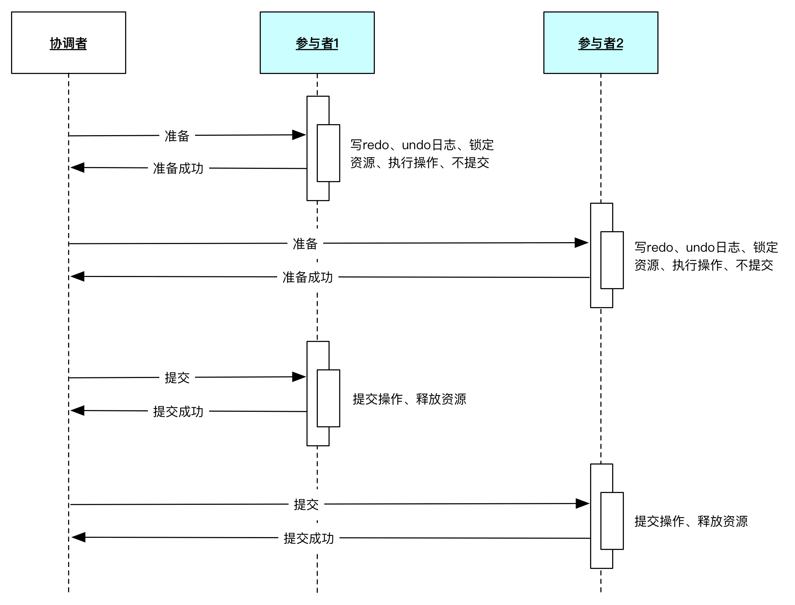
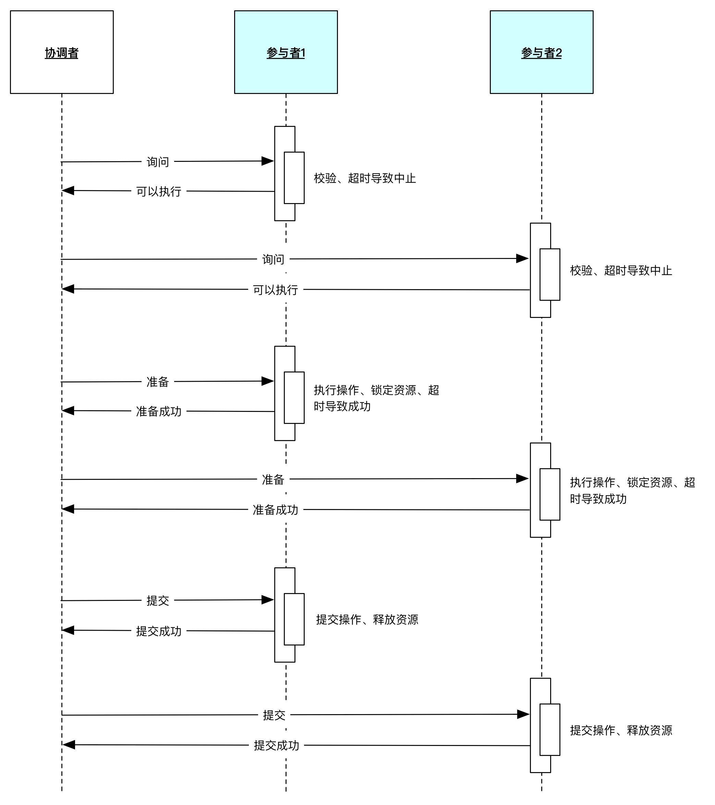
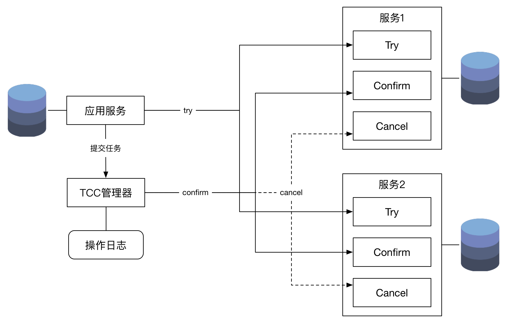

Atomicity（原子性）：一个事务（transaction）中的所有操作，或者全部完成，或者全部不完成，不会结束在中间某个环节。
Consistency（一致性）：在事务开始之前和事务结束以后，数据库的完整性没有被破坏。
Isolation（隔离性）：数据库允许多个并发事务同时对其数据进行读写和修改的能力，隔离性可以防止多个事务并发执行时由于交叉执行而导致数据的不一致。
Durability（持久性）：事务处理结束后，对数据的修改就是永久的，即便系统故障也不会丢失。
那什么是分布式事务？
分布式事务就是指事务的参与者、支持事务的服务器、资源服务器以及事务管理器分别位于不同的分布式系统的不同节点之上。
简单的说，就是一次大的操作由不同的小操作组成，这些小的操作分布在不同的服务器上，且属于不同的应用，分布式事务需要保证这些小操作要么全部成功，要么全部失败。
关系型数据库由于关系型数据库是单节点的，因此，不具有分区容错性，但是具有一致性和可用性。
而分布式的服务化系统都需要满足分区容错性，那么我们必须在一致性和可用性中进行权衡
具体表现在服务化系统处理的异常请求在某一个时间段内可能是不完全的，但是经过自动的或者手工的补偿后，达到了最终的一致性。



保证最终一致性的模式